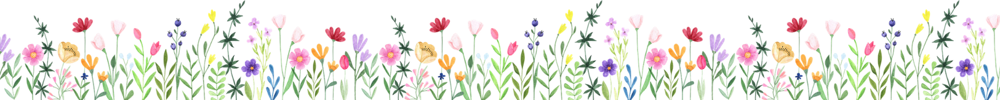
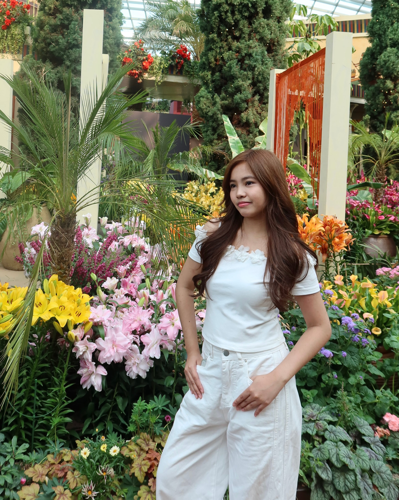
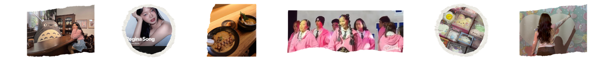

Hi, I'm Zoe!
Welcome to my digital scrapbook featuring my interests, hobbies, travel memories,
random facts, things I'm currently obssessed with, and so much more!!!

About Me

Hi again! I'm Zoe and I'm a BSCS-NIS student at the DLSU. I actually started out in the COS
before shifting to the CCS, so my college journey has been a bit of a rollercoaster ride.
Outside of school, I'm someone who loves both creative and expressive things.
I enjoy traveling, taking pictures, dancing, dressing up, and doing my makeup.
For me, these little things are ways that I can express my self and make life more fun.
I also go through phases of getting into certain things so easily. Whether it's something cute
I discover, a new place I want to visit, or a new hobby I want to try.
Future Goals
- To finish college
- To get a job that I would actually enjoy
- To travel to many different places
- To learn new things and explore more hobbies
Fun Facts
- I like watching animated films by Studio Ghibli
- I love all the songs by Regina Song
- I enjoy eating Japanese food like ramen and sushi
- I have a soft spot for cute things
- I have over 50 squishies
- I go to dance classes every week

Go to the top! | Introduction | About Me | Future Goals | Fun Facts